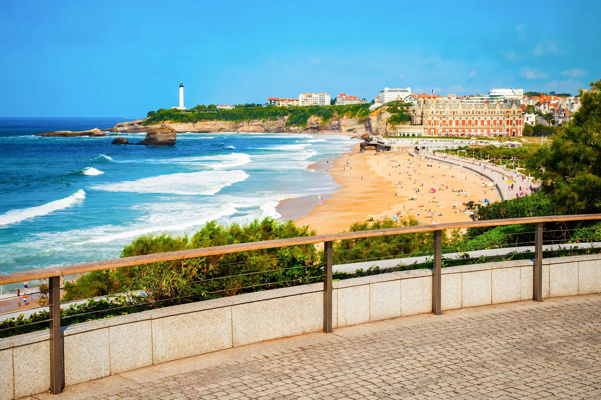
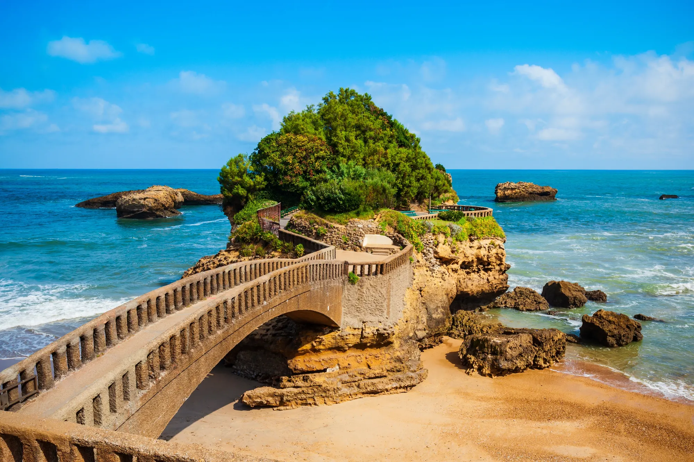
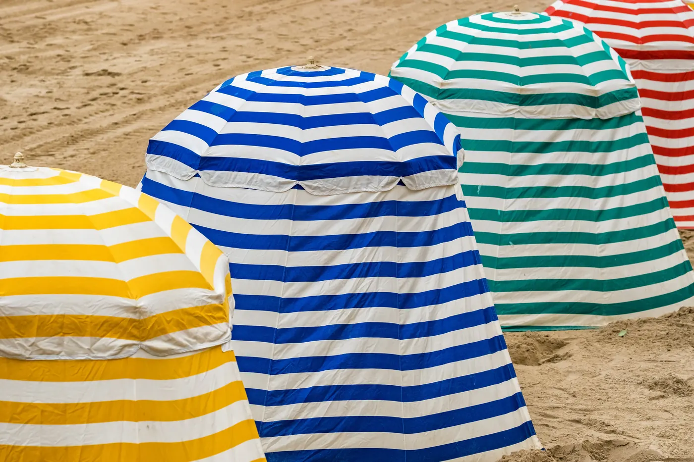
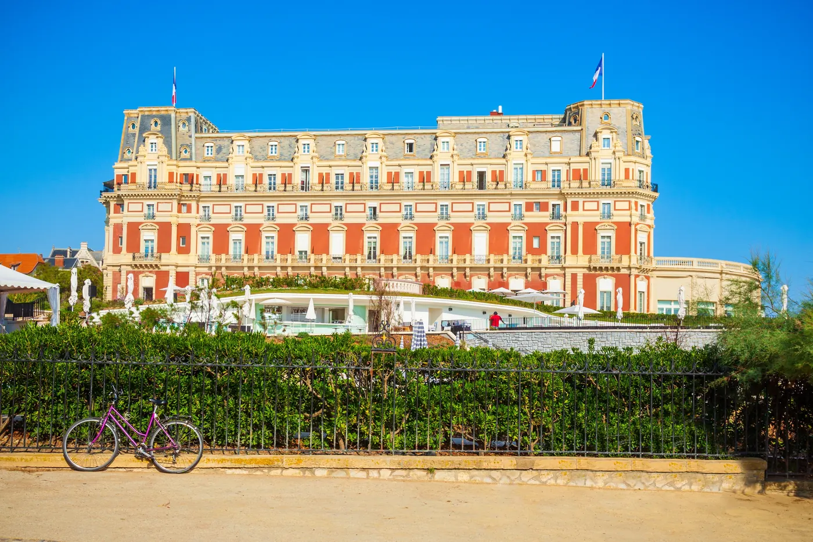
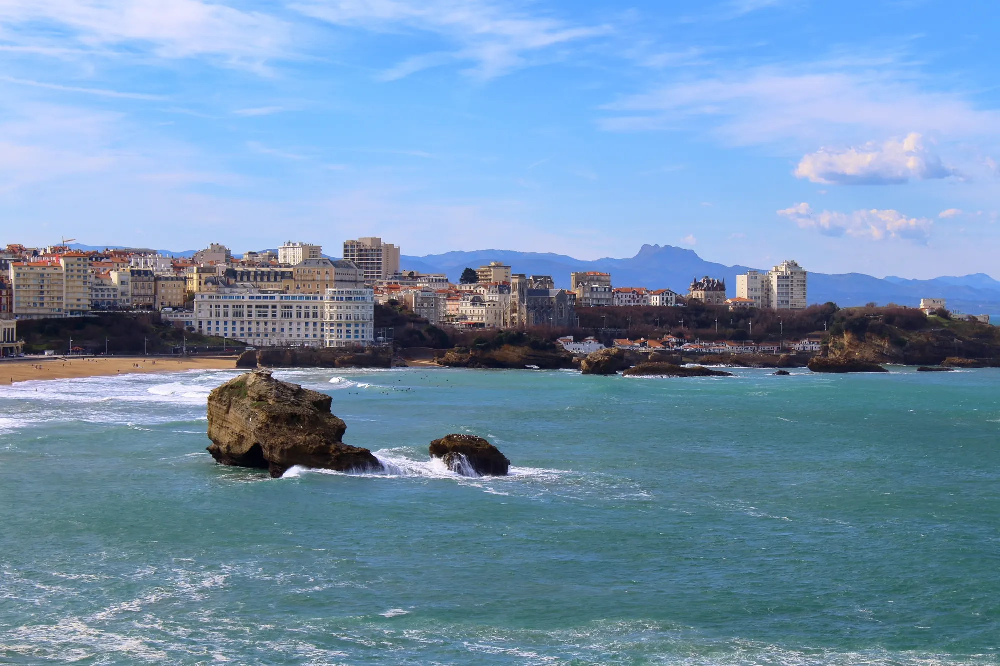
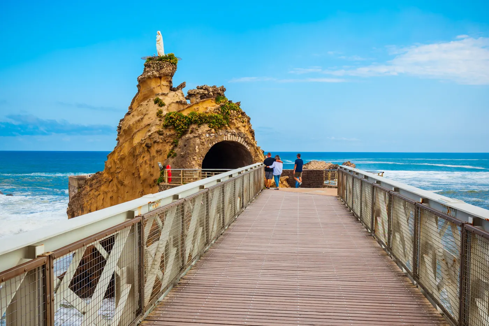
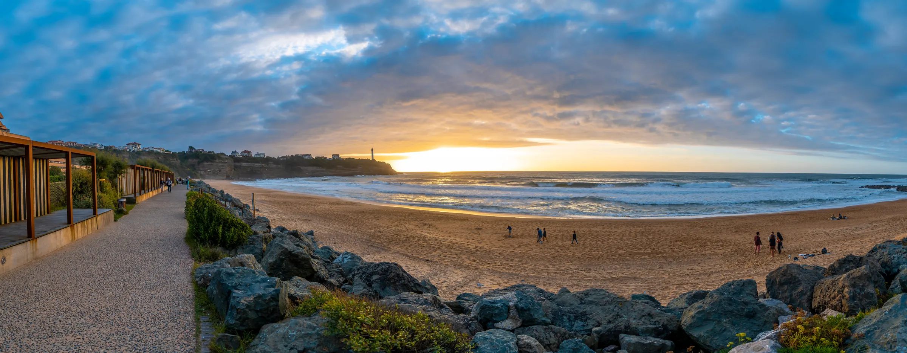

Living in Biarritz, between the ocean and the city

Biarritz is first seen from the ocean, but it is lived well beyond its beaches. A few minutes apart, you pass from the centre and Les Halles to the streets of Saint-Charles, from Bibi-Beaurivage to the more residential neighbourhoods of Milady, Parc d'Hiver or Lac Marion.
Living in Biarritz
Choosing a property in Biarritz is therefore not only choosing an address or a view. It is choosing a way of living here all year round: on foot in the centre, close to the ocean, in a quieter house, or in the middle of a neighbourhood where schools, shops and services count as much as the scenery.
The ocean is not a backdrop
In Biarritz, the ocean sets the pace. The swell, the wind, the tides and the seasons change the city as much as the light does. People walk, swim, surf, watch the sea, and in the end it becomes part of everyday life.
Surfing deserves a special mention. Here it does not work as a mere destination image: it runs through generations, schools, shops and local habits.

The beauty, then the reality
Biarritz attracts by its character, but living or buying here also means looking at the figures: who lives in the city, how many homes are occupied year-round, what share belongs to second homes, what services really exist, what a property costs and what a rental investment can reasonably return.
Biarritz, what the figures say
Biarritz has 25,810 inhabitants. The age structure is the first figure to know: 44.6% of Biarrots are 60 or older (11,520 people), and 9.4% are under 15 (2,437 children). It is the profile of the great seaside resorts, where people settle for good: across France, the 60-and-over represent 27.0% of the population, and the under-15s 17.3%.
Source: INSEE, 2022 population census, infra-communal (IRIS) bases. France shares computed from the same base (France excluding Mayotte).
It is the city's signature figure: Biarritz has more homes than inhabitants (26,387 homes for 25,810 inhabitants). Second and occasional homes account for 40.7% of the stock, i.e. 10,750 homes. It is first of all a measure of attractiveness, and it explains much of the price pressure: across France, second homes represent 9.7% of the stock, more than four times less. Conversely, vacant homes are rare: 2.1% of the stock, against 8.0% in France, the sign of a city where a home always finds a taker.
The city-wide average hides a very sharp gradient: a fourfold gap between City Centre · Les Halles (61.5%) and Lac Marion (16.8%). And within the Centre itself, the seafront area rises to 72.2% second homes. Neighbourhood by neighbourhood:
| Neighbourhood | Inhabitants | Homes | Second homes |
|---|---|---|---|
| City Centre · Les Halles | 3,746 | 6,573 | 61.5% |
| Bibi-Beaurivage | 1,520 | 2,063 | 51.2% |
| Imperial Quarter · Saint-Charles | 4,177 | 5,697 | 50.1% |
| Milady Quarter | 3,745 | 3,015 | 26.6% |
| Parc d'Hiver · Braou | 7,571 | 5,822 | 25.0% |
| Lac Marion | 5,051 | 3,217 | 16.8% |
Source: INSEE, 2022 census, housing and population bases at IRIS level (geography as of 1 January 2024). France shares computed from the same base (France excluding Mayotte). Site neighbourhoods = groupings of IRIS; detailed correspondence on each neighbourhood page.


Useful services
INSEE counts 2,528 facilities in Biarritz in 2025, roughly one for every ten inhabitants. And one figure says how much the city attracts: 218 estate agencies, one per 118 inhabitants, more than the bakeries (42), pharmacies (19) and general practitioners (53) combined. Density beats the national reference on every one of these lines: France has one estate agency per 610 inhabitants, and one fronton per nearly 25,000.
Source: INSEE, Base permanente des équipements 2025 (geography as of 1 January 2025), geolocated detail file. Ratios computed on the 2022 municipal population; France ratios computed on the same BPE and the France population of the same 2022 base (excluding Mayotte). Neighbourhood detail on each neighbourhood page.

What it costs
On 2024–2025 recorded sales, the average price in Biarritz is €7,591/m² for an apartment and €9,421/m² for a house. Depending on the neighbourhood, the apartment average runs from €5,407/m² at Lac Marion to €8,321/m² in City Centre · Les Halles. The detail, neighbourhood by neighbourhood:
Source: DVF (DGFiP / Cerema, Open Licence 2.0), 6,304 sales 2019–2025, extracted July and August 2026, calculations by Biarritz.immo. Average prices on 2024–2025 sales.

Buying to let
It all comes down to one simple question: how much does the money put into the property earn each year? That is what is called the gross yield, and it takes one line to work out: one month's rent, multiplied by twelve to make a year, divided by the purchase price. A 4% yield means €4,000 of rent collected over the year for €100,000 invested.
Along the Basque coast the rule is clear: the more expensive a town is to buy into, the less it returns. Between Bayonne and Biarritz rents differ by only about a fifth, while purchase prices are almost double. That gap decides everything: an apartment returns 4.0% a year in Bayonne against 2.6% in Biarritz. Buying in Biarritz is therefore played out on what the property is worth over time rather than on the rent it brings in.
| Apartments | Monthly rent | Purchase price | Gross yield |
|---|---|---|---|
| Bayonne | €13.79/m² | €4,115/m² | 4.0% |
| Anglet | €15.25/m² | €5,357/m² | 3.4% |
| Biarritz | €16.39/m² | €7,591/m² | 2.6% |
| Houses | Monthly rent | Purchase price | Gross yield |
|---|---|---|---|
| Bayonne | €14.73/m² | €5,157/m² | 3.4% |
| Anglet | €17.09/m² | €7,611/m² | 2.7% |
| Biarritz | €17.91/m² | €9,421/m² | 2.3% |
These percentages are orders of magnitude, not a promise of income. The gross yield deducts nothing: neither service charges, nor property tax, nor works, nor the months when the home sits empty between tenants, nor the tax on the rent received. Once all of that is taken out, what is actually left is appreciably lower. Two further cautions: the rent published here includes charges, which inflates the result slightly, and it is measured across the whole town. A studio facing the Grande Plage does not let like a three-room flat at Lac Marion.
Sources: rents, Carte des loyers 2025 (ANIL and the Ministry of Housing, from 9.1 million listings, rent including charges, €/m² per month); prices, DVF recorded sales 2024–2025, municipal average, extracted 6 August 2026, calculations by Biarritz.immo. Gross yield = rent × 12 / price, before charges, property tax, vacancy and taxation. House rents rest on small samples, 211 listings in Biarritz, 299 in Bayonne and 344 in Anglet: read them as trends.

Before buying: natural risks and coastline retreat
Géorisques, the public risk portal, lists four risks for the municipality: ground movement, subsidence and collapse linked to former underground quarries, earthquake (zone 3 of 5, moderate seismicity) and transport of hazardous goods. The municipality's radon potential is category 2 of 3.
The most important point for a seafront buyer: Biarritz is on the official list of municipalities exposed to coastline retreat, since the initial decree of 29 April 2022. The list, last replaced by the decree of 13 February 2026, counts 371 municipalities, six of them on the Basque coast: Anglet, Biarritz, Bidart, Ciboure, Guéthary and Saint-Jean-de-Luz. In practice, the municipality must adapt its planning rules to the retreating shoreline and map its exposure; for anyone buying facing the ocean, it is a fact worth knowing, as everywhere along the Basque coast.
Sources: Géorisques API (consulted August 2026); decree no. 2022-750 of 29 April 2022, amended by decree no. 2026-95 of 13 February 2026 (Légifrance).
And a specific property?
The estimator calculates its value from real recorded sales around its address. Free, instant, no sign-up.
Value a property in Biarritz